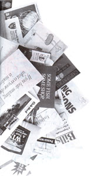

Earth Diary
Stop Junk Mail Forever Direct mail marketers take in billions each year by sending you pitches and promos you didn't ask for. Here's how to strike back and end the "great paper waste".
Every American, on average, receives 677 sales pitches in his or her mailbox every year-thanks to low-cost, third-class postal rates. While the direct mailers who produce and distribute those 40 million tons of sales pitches take in over $200 billion annually, taxpayers bear the burden of some $320 million to cart their unsolicited promos, pleas, and promises to and from incinerators, garbage dumps (on land and sea), and recycling centers. Sixty-eight million trees and 28 billion gallons of water (and the animals who lived there) are used to produce each year's crop of catalogs and come-ons. Nearly half get trashed unopened.
Many of the environmental organizations that you'd expect to speak up for the trees, rivers, and wildlife are silent about junk mail. Why? Because they support themselves just like the other mailbox fishermen do ...by casting an extremely wide net to catch a couple of fish. A "response rate" of 1% or 2%-that's 1 or 2 of every 100 pieces mailed-is considered typical, no matter if the mailer is a worthy charity. . . or the distributor of yet one more vegetable slicer.
There's another issue of great concern to us: Privacy. We think Americans should have the right to choose how personal information about them is marketed, if at all. What follows are some clear instructions on how to keep your name, business, address, and other personal information, private-off of those thousands upon thousands of mailing lists that are regularly bought and sold, without our approval, for pennies a name.
But the privacy implications go well beyond junk mail. Until recently, anyone who wanted to find you-be it a bill collector, abusive spouse, or crazed stalker-could walk into your old post office, after you'd moved, and get your new address. All that was required was $3 and presentation of your former address. Finally realizing this danger, the U.S. Postal Service is changing the regulation that allows such easy access to your new address. But in many states, it remains nearly as simple to find you from your motor vehicle records.
Direct-mail advertisers and the Post Office say that third-class/bulk rates are calculated to compensate the Post Office for its costs of handling and delivery. We're told that first-class stamp buyers like us (we never ship third class) "don't subsidize waste mail," as one postal official calls it. Perhaps that's true. I'm not convinced.
A solution might be the idea of "solidwaste-management rates" for junk mail, which were first proposed by Richard Bossert, of New York's Consumer Protection Board (R. Kessel, Chair). These rates would cover the full costs of delivery and disposal-with enough extra tossed in to pay for environmental damage.
We believe that caring, direct mailers who use a more carefully focused marketing strategy, rather than the current scatter-shot approach, can create more jobs, satisfy more customers, and earn more ...while protecting the planet.
If you've ever bought anything through the mail-a magazine, a pair of slippers, a ream of paper for the office, or a packet of seeds-chances are the company that you patronized increased its profits by renting, selling, or trading your name, as well as other pertinent, personal information about you.
Here's how it works: Say you buy something from a mail-order firm we'll call Trinkets for Tots, whose catalog features items to keep preschoolers amused. Trinkets for Tots sends you what you ordered and adds your name to its customer list. Through a member of the vast listbrokering industry, your name is rented for what's called, "a one-time use," to other-usually related, but not directly competitive companies (such as mailorder suppliers of kids' clothes).
And if you've ever given money to a cause or charity ...watch out! For example, people who've donated to conservative causes wind up in "politically conservative direct-mail donors" files. Broader based givers can be targeted through "Donoreach," which offers some 12 million names "that can be selected by type of cause and even multidonors to the same or different causes." The 2.2 million contributors to the Muscular Dystrophy Association and its annual telethon are sold on lists "enhanced with exact age, income, and 26 mail-response-interest categories to help you target your best prospects," according to Donoreach.
No luck? maybe it's time for an "improved species of new donors"-the American Museum of Natural History's list-"they'll contribute to anything...," the ad says.
The more targeted the list of names, the higher the price it commands. For example, R.L. Polk, a giant in the listbrokering field, charges $40 per thousand for its "Household List" (79 million names). But Polk's more specific "New Mover List" goes for $130 per thousand, based on the assumption that they are hot prospects for businesses like insurance brokers, restaurants, and furniture stores. Once a mailing-list broker gets your name, it can be sold to literally hundreds of organizations.
As computers make it easier to collect more information about more people and more businesses, the number of organizations you have to ask to STOP sending you stuff seems to increase exponentially. R.L. Polk says that its lists are developed by the "merging of 22 sources, totaling more than 1.8 billion records annually."
As the U.S. Post Office reports in "The Small Business Direct Mail Guide," which it puts out to encourage more junk mail:
"Direct- mail lists are compiled in hundreds of ways from numerous sources, ranging from voter registrations to attendees of trade shows, from the neighbors of your existing customers to people buying similar products/services."
The quickest way to have your name and address removed from many-but by no means, all-lists is through the Mail Preference Service, sponsored by the Direct Marketing Association (DMA).
When you request this trade organization's free service, include your name and address-in all the various ways they appear on the junk mail you receive. Send your postcard to:
Mail Preference Service
Direct Marketing Association
PO. Box 9008
Farmingdale, NY 11735
212-768-7277
Your name and address will be registered on DMNs "Delete File," which is reportedly used by the majority of this organization's 3,600 members, who receive it four times a year (January, April, July, and October). So it could take three months or more for your wishes to be acted upon.
Once your name makes it to the "Delete File," it will remain there for five years-unless, of course, you order something else and forget to say, "Please do not sell, rent, or trade my name."
Place a new order, or request a catalog, and-unless you say those magic words to an outfit that respects your rights-your name, address, and mountains of other personal statistics will again be fair game, as your mailbox will soon attest.
Even if you're careful, unless our nation comes up with a better system, you'll need to recontact the Mail Preference Service every five years, to continue your respite from the junk-mail lists that DMA members control.
Unfortunately, although "business-to-business" junk mail accounts for about 25% of third-class mail, it's not covered by the Mail Preference Service. In fact, only about 70% of national direct marketers subscribe to DMA's Mail Preference Service. Nonprofit organizations, political groups, and local marketers generally don't subscribe at all.
Therefore, to really stop junk mail, you'll also need to:
1. Contact all the organizations whose mailings you'd rather not receive-at home or at the office-and tell them to remove you from their data bases.
2. Be very careful about giving out your name, business, address, and phone number. When you do give them out, make sure to request that your name be placed on an "in-house list ...only."
3. Avoid the U.S. Post Office's change-of-address system when moving.
4. Consider getting an unlisted telephone number.
In our view, a little duplication in the pursuit of a solution to this problem is no vice. The more we all get the message across-that direct mailers should target their lists far more carefully and be more environmentally sensitive to their customer's wishes-the better.
To get out of the biggest list brokers' data bases, send your name, address, and phone number to the following four organizations. Request that your personal information be removed from all their mailing and telemarketing lists.
R. L. Polk & Co.-"Name Deletion File"
List Compilation and Development
6400 Monroe Boulevard
Taylor, MI 48180-1814
800-873-7655
Donnelley Marketing, Inc.
Data Base Operations
1235 N. Avenue
Nevada, IA 50201-1419
515-382-5441
Metromail Corporation
List Maintenance
901 West Bond
Lincoln, NE 68521
800-228-4571
Database America
Compilation Department
100 Paragon Drive
Montvale, NJ 07645-0419
800-223-7777
If you operate a business, you may also need to write to:
Dun & Bradstreet
Customer Service
899 Eaton Avenue
Bethlehem, PA 18025
800-333-0505
There are more list brokers, to be sure-but from what we could gather, the others remove names only when they appear in the Mail Preference Service's "Delete File." They won't respond to individual requests.
TRW, Equifax, and Trans Union are the three largest credit bureaus in the United States. They're the ones who gather the information that lenders use to decide whether or not to approve your credit and loan applications.
Credit bureau reports typically include your name, address, date of birth, social security number, employer's name and address, as well as your payment history on loans, credit cards, and other bills.
While "the big three" keep the particulars of your financial situation private, if your credit's good, they'll sell your name to banks and credit-card companies-thus all those preapproved, but unsolicited credit card applications.
By the way, Congress is considering a new "consumer-reporting-reform" bill to curb some of these marketing practices. Under the proposed law, banks and credit card companies couldn't go "fishing" for prospects by sending out so-called preapproved applications that in fact still need approvals. Credit-card solicitations would have to be firm offers of credit. You'd be told how your name was obtained and exactly how you could "opt-out" of future mailings. Of course, there's a long road from congressional bill to final law. Until then, to be removed from the credit bureaus' direct-marketing files, write to:
TRW-Target Marketing Services
Consumer Relations
901 North International Parkway
Richardson, TX 75081
800-527-3933
Equifax Options
PO. Box 740123
Atlanta, GA 30374-0123
404-885-8309
Trans Union
TransMark, Inc.
555 West Adams Street
Chicago, IL 60601
312-466-7815
Also known as product-registration cards, these are packaged with everything from VCRs, televisions, and fax machines, to toasters, irons, and hair dryers. When you buy a warranted product, the card usually gets returned not to the manufacturer, but to a post office box-often in Denver, Colorado.
For example, say you just purchased a combination telephone-and-thumb exer ciser that was infomercialed on insomniac TV. It arrives with a warranty card for you to return to Whatzit Manufacturing at P .O. Box 173035, in Denver.
P.O. Box 173035 isn't rented by Whatzit. It belongs to National Demographics & Lifestyles (NDL), which manages a consumer data base of over 30 million names, gathered from product registrations for about 100 companies. These cards contain questions about income, marital status, and hobbies, to name but a few. Once a warranty card is returned, the information is matched up with facts NDL collects from other sources, to develop a profile of each of us, as consumers-which NDL then sells to direct marketers.
You're covered by the manufacturer's warranty-whether you return the card or not. In fact, many cards include a statement like the following: "Failure to return the warranty card will not affect your rights under this warranty, so long as you retain another proof of purchase, such as a bill of sale." There's really only one reason to return a warranty card-to find out about product recalls. If you return a card for that reason, provide only your name, address, and the product's serial number. NDL reports that it now includes a checkoff box, where you can indicate that you don't want your name sold. But many warranty cards don't have them. If you decide to return a card without a check-off box, add a note saying that you want your name kept private. To be removed from the lists NDL markets, write to:
National Demographics & Lifestyles
Customer Service Department
1621 18th Street, #300
Denver, CO 80202
800-525,3533
As you might expect, credit-card companies use their customer mailing lists to keep members informed about benefits and special events-as well as to market their own goods and services. They also let other companies send promotional materials to cardholders, either along with billing statements or through separate
mailings. If you're an American Express cardholder who wants a breather from all these promos, it's relatively easy. Ask Amex to remove your name from its directmarketing lists. You can opt out of the Amex in-house lists, the outside company lists, or both. Contact:
Customer Service
American Express
200 Vesey Street-Tower C
New York, NY 10285
800327-2177
To get your name removed from other credit-card companies' mailing lists, call or write the customer service office for each card-the address and phone number should be listed on your statement. If you have five MasterCards and eight Visas, all from different banks, you need to contact all 13, since neither MasterCard nor Visa has a central customer-service bureau. Note: When you write to a credit-card company, spend the extra dime, and put your request in a sealed envelope. Account numbers should never be publicly displayed.
Are you carrying around one of those plastic cards from your local supermarket that entitles you to loads of extra savings without clipping coupons? Think the store got you to apply for this card just to save you some money? Think again. Once the checkout clerk "swipes" your card, your name and address are linked to the items you just bought. It's another way to find out your buying "preferences," so the supermarket can put you on yet more mailing lists.
To make sure that your name isn't sold to a list broker when you subscribe to a magazine, enclose a note with your order requesting that your name be put on an "inhouse list ...only." After receiving the first issue, call the magazine's subscription department (the phone number will be listed within the first few pages of the magazine), to verify that your name has been omitted from any lists that get sold, rented, or traded. If you're already a subscriber, look for the magazine's change of address notice. Often, you'll find instructions there about how to "opt-out" of the mailing lists the magazine sells.
Chances are, the last time you moved, you filled out a change-of-address form at the post office, known in bureaucratese as "#3575." Most of us fill them out so we won't miss Rachel's surprise postcard from Bora Bora-or some magazine we forgot to alert in time about the new address.
The U.S. P ost Office also takes the liberty of notifying a few other folks about our comings and goings. Look at the front of Form #3575, and you'll see this Privacy Act Statement: "Filing this form is voluntary, but your mail cannot be forwarded without an order. If filed, your new address will be provided to individuals and companies who request it. This will occur only when the requester is already in possession of your name and old mailing address..." That's better than the previous statement, in which the U.S. Post Office just told you that your new address "may be given to others." Another improvement in the works is that it's going to be more difficult to get new addresses for those under court protection, such as battered women. However, buying and selling will remain a thriving business for both the Post Office and direct mailers. Here's how it works:
The forwarding information on the almost 40 million Americans who fill out these forms each year is rented via the National Change of Address system (NCOA) to some 25 private businesses licensed by the U.S. Postal Service. (At last report those licensees pay $80,000 up front and $56,000 a year for the pleasure-and profit-of being notified that you've changed your address.) Not surprisingly, included among the licensees are some of the largest mailing-list brokers, direct-mail merchants, and credit bureaus in the country-TRW, R.L. Polk, and Donnelley Marketing, for example. These outfits sell those 40 million annual change of address records to other companies ...which is how marketers who have your old address on file know where you've moved.
If your name and address are already floating through the NCOA system via a change of address form, you can ask to be taken out of the NCOA data base. Send your request, including your name and both your old and new addresses to:
National Customer Support Center
NCOA Department
6060 Primacy Parkway, Suite 101
Memphis, TN 38188
800-238-3150
A congressional subcommittee investigating the NCOA system turned up an interesting finding. So it can provide bulkrate mailers with apartment numbers of city dwellers, the Post Office has been conducting an experiment in New York City, trying to create a refined data base by referring to apartment directories and speaking with building managers.
Although many New Yorkers intentionally leave apartment numbers off their addresses to protect their privacy and safety, the Post Office contends that, just like the NCOA system, no one would be given the apartment number who didn't already have your address. If the Post Office likes the results of its experiment in New York, could your city be next on the list?
If you've ever ordered a publication from the U.S. Superintendent of Documents, the federal government may have sold your name and address to private companies. A spokesperson says the Superintendent of Documents sells only the names of people or businesses who've ordered highly specialized periodicals and only after asking their permission on an order form. If you'd like to be deleted from mailing lists sold by Uncle Sam, send your name and address, along with the name of the government periodical you receive, to:
Superintendent of Documents
Attention: Direct Mail Manager
941 North Capitol Street, NE - Mail Stop SM
Washington, DC 20401
202-512-2258
Many state departments of motor vehicles (DMVs) sell their data-including make and model of cars owned-to mailing-list brokers. These brokers, in turn, use the detailed information they obtain here and elsewhere, to compile sophisticated lists, for example, of owners of a particular make of car. A dealer could then send you a personalized mailing offering a specially priced winterizing for your 1989 Blue Camaro or the opportunity to attend a "sneak preview" of the latest in minivans. In some states, citizens can extricate themselves, either by indicating a "no-mailing-list" preference on application forms, or by contacting their department of motor vehicles. Check with your DMV office; each state's regulations differ.
But by and large, your driving record is fair game to a potential employer, or anyone else who's willing to pay as little as $2 (the going rate in Oregon, for example). This information is a matter of public record, say the DMVs, which means there's nothing you can do to keep interested parties from knowing your traffic violations. Another good reason to drive defensively.
If legislation pending in congress passes, information from your DMV records will only be given to people with a "specific business-related reason for obtaining the information." That'll still include direct marketers, but the DMV will have to give you a chance to say "no thanks."
Do packets of ads, coupons, or product samples sent to "occupant" tend to go directly from your mailbox to the circular file? Request that your address (since your name never appears) be removed from the mailing lists of the following companies. They're the major players in this business, distributing literally billions of coupons, fliers, and what have you, to millions of households, every year:
ADVO Inc.
List Service Supervisor
239 West Service Road Hartford, CT 06120
203-520-3200
Donnelley Marketing
Operations Department
6030 North US 301
Elm City, NC 27822
919-236-4301
Carol Wright Gifts
Customer Service
PO. Box 8502
Lincoln, NE 68544
402-474-2018
Harte Hanks Direct Marketing
Last Maintenance
100 Alco Place
Baltimore, MD 21227-2090
410-247-0666
Money Mailer
14271 Corporate Drive
Garden Grove, CA 92643
714-265-4100
Val-Pak Coupons
Address Information Department
P .O. Box 13428
St. Petersburg, FL 34643
800-237-2871
(To come off Val-Pak's lists, send along your complete address label from the next Val-Pak mail ing you receive.)
For the junk you can't seem to stop, here are three protest options:
1. For the few unwanted pieces that come to you via first-class mail, mark them with something like, "Return to Sender. Don't send me your junk." They'll go back to the mailers-at their expense-for them to trash-also at their expense.
2. With third-class mail that's accompanied by a postage-paid envelope, you can stuff the junk into it, and write your rendition of "Stop sending me junk mail" on the outside. Pop it in the mailbox, and again, the mailer pays.
3. Although it's not the sort of information that the U.S. Post Office likes to volunteer, you can refuse any piece of mail. Since direct mailers rarely guarantee return postage, the Post Office will become responsible for disposing of most of the junk mail you refuse.
Unfortunately, until the system changes, that won't save us any money. As taxpayers and stamp buyers, we'll continue to pay. But maybe, just maybe, if the Post Office has to handle a few million tons of refused garbage, it'll finally revise the rate schedules so that those who send, spend-for the disposal and environmental costs associated with their sales pitches. Then maybe the direct mailers will more carefully target their prospects and send their offerings only to those people who are very likely to be responsive.
More and more third-class mail is arriving with "opt-out" check-off boxes. It's getting easier to say "No!" to direct mar keting campaigns-and to get rid of duplicate mailings. Recycling is another positive trend. At long last' there are large-scale efforts underway to reclaim more of what used to be waste. For example, more of those promos are being printed on recycled paper. And in the Northeast, 1,000 communities are participating in the Marcal Paper Mills' Recycling Project. Marcal picks up magazines, catalogs, advertising, and bulk business mail, as well as white office paper, to be recycled into Marcal tissues, toilet paper, and napkins.
Check with your local solid-waste agency to see if the Marcal program, or something similar, exists in your area. If not, encourage the powers-that-be to start one. (Marcal welcomes inquiries about its program from people in the Northeast. Call the company at 201-796-4000 and ask for the "Fiber Procurement Department:")
And as we've detailed, there's a chance that congress will pass some useful legislation. It would help if you'd send postcards to your elected officials to let them know how much you value privacy and discourage the depredation of the environment, and that you support legislation to curb junk mail. You can write to them at:
U.S. House of Representatives
Washington, DC 20515 or...
U.S. Senate
Washington, DC 20510
May you live junk-mail free, happily ever after.
|
 |
|
|